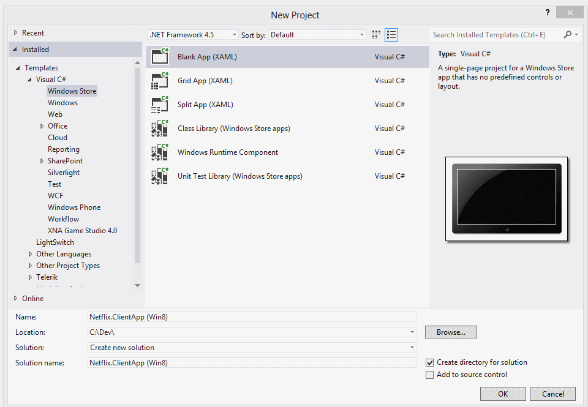
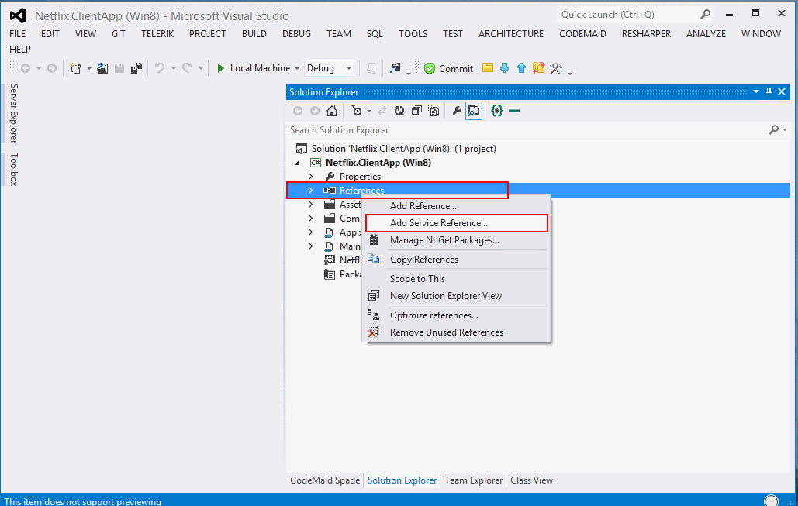
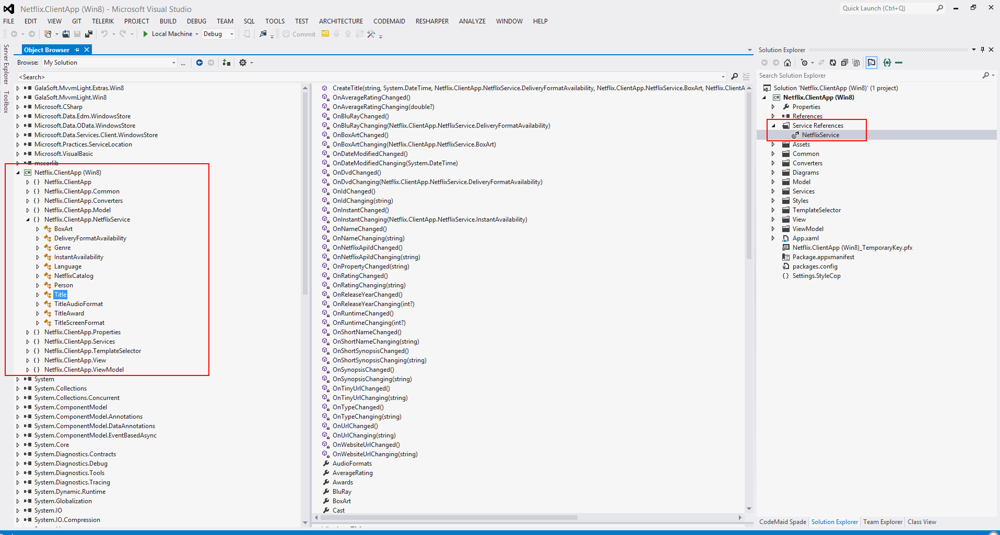
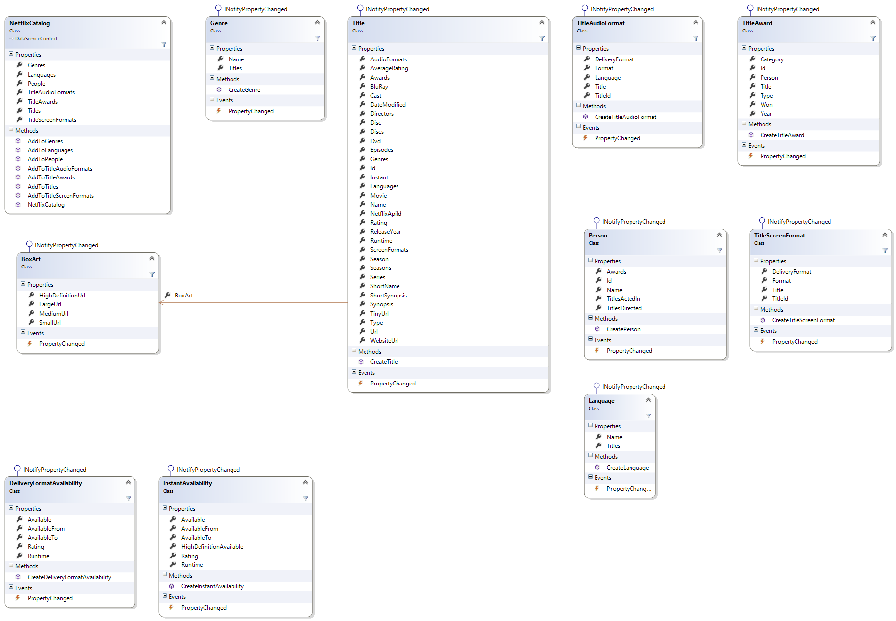
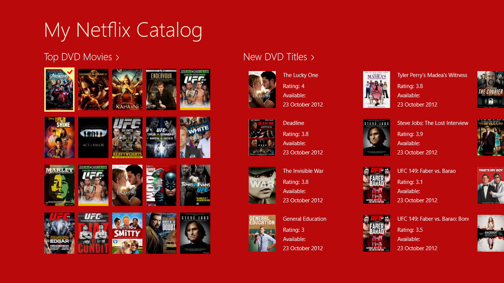
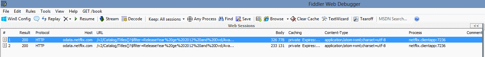

Consuming Odata Service in Windows Store Apps (Include MVVM Pattern)
Introduction
This demo has the main goal to show the steps that is need to consuming an OData service in Windows Store Apps, and use the MVVM Pattern and has Ioc container for manage the dependencies.
Building the Sample
You only need Visual Studio 2012 and Windows 8, both the RTM version.
Description
For concretizate this sample i used the Netflix OData Catalog API (Preview), that can be found where:
For who is starting with OData service in Windows Store Apps i recommend to install the:
WCF Data Services Tools for Windows Store Apps
“The WCF Data Services Tools for Windows Store Apps installer extends the Add Service Reference experience with client-side OData support for Windows Store Apps in Visual Studio 2012.”
Here is the main points:
1. Creating a Blank Project like you can see in the following image:
2. Add Service Reference
3. Analizing the NetflixService
4. The IServiceManager, FakeServiceManager and ServiceManager
4.1. The LoadNewDVDMoviesAsync method
4.2. The LoadTopDVDMoviesAsync method
4.3. The DataServiceContextAsyncExtension
4.4 The model
5. The TitlesViewModel
5.1 The LoadDataAsync method
5.2 The GroupView and ItemView
6. Binding the view model with the view
6.1. ViewModelLocator
6.2. In App.xaml
6.3. In the TitlesPage.xaml
6.4. In the TitlesPage.xaml.cs
6.5. Binding Data
7. The output / running the demo
8. Fiddler
Let's start:
1. Creating a Blank Project like you can see in the following image:

Note: I used te name Netflix.ClientApp (Win8) for the project, but i will change the namespace for Netflix.ClientApp and in the future if I need to create the Netflix.ClientApp (WP8, i can use the same namespace and if need to "linked as" some file i will not have problems with namespaces.
2. Add Service Reference


The service reference that i added is: http://odata.netflix.com/v2/Catalog/
3. Analizing the NetflixService
The result will be:

Note: Is not required, but you can create a class diagram that will show all classes and its properties, method and events. It helps to understand that was added when you added the service reference.

4. The IServiceManager, FakeServiceManager and the ServiceManager
Now the project has the service, and I decided to get the top of the DVD Movies and the new releases of the DVD Movies. With this i will define an interface for my service manager.
Here is the code:
/// <summary>
/// Defines the service manager interface
/// </summary>
public interface IServiceManager
{
/// <summary>
/// Loads the new dvd movies async.
/// </summary>
/// <returns>
/// Represents an asynchronous operation that return a IEnumerable.
/// </returns>
Task<IEnumerable> LoadNewDVDMoviesAsync();
/// <summary>
/// Loads the top dvd movies async.
/// </summary>
/// <returns>Represents an asynchronous operation that return a IEnumerable.</returns>
Task<IEnumerable> LoadTopDVDMoviesAsync();
}
/// <summary> /// Defines the service manager interface /// </summary> public interface IServiceManager { /// <summary> /// Loads the new dvd movies async. /// </summary> /// <returns> /// Represents an asynchronous operation that return a IEnumerable. /// </returns> Task<IEnumerable> LoadNewDVDMoviesAsync(); /// <summary> /// Loads the top dvd movies async. /// </summary> /// <returns>Represents an asynchronous operation that return a IEnumerable.</returns> Task<IEnumerable> LoadTopDVDMoviesAsync(); }
The fake implementation will be
FakeServiceManager
/// <summary>
/// The fake service manager.
/// </summary>
public class FakeServiceManager : IServiceManager
{
/// <summary>
/// The bitmap soure
/// </summary>
private readonly BitmapImage _bitmapSoure;
/// <summary>
/// Initializes a new instance of the <see cref="FakeServiceManager" /> class.
/// </summary>
public FakeServiceManager()
{
_bitmapSoure = new BitmapImage(new Uri("ms-appx:///Images/FakeImage.png"));
}
/// <summary>
/// Creates the items.
/// </summary>
/// <param name="number">The number.</param>
/// <returns>the list of mytitles</returns>
public IEnumerable CreateItems(int number)
{
var myTitles = new List<MyTitle>();
for (var i = 0; i < number; i++)
{
myTitles.Add(new MyTitle
{
Name = string.Concat("Fake Name ", i),
AvailableFrom = DateTime.Now,
Rating = 0,
Image = _bitmapSoure
});
}
return myTitles;
}
/// <summary>
/// Loads the new dvd movies async.
/// </summary>
/// <returns>
/// Represents an asynchronous operation that return an IEnumerable.
/// </returns>
public async Task<IEnumerable> LoadNewDVDMoviesAsync()
{
return await Task.Run(() => CreateItems(20));
}
/// <summary>
/// Loads the top dvd movies async.
/// </summary>
/// <returns>
/// Represents an asynchronous operation that return an IEnumerable.
/// </returns>
public async Task<IEnumerable> LoadTopDVDMoviesAsync()
{
return await Task.Run(() => CreateItems(20));
}
}
/// <summary> /// The fake service manager. /// </summary> public class FakeServiceManager : IServiceManager { /// <summary> /// The bitmap soure /// </summary> private readonly BitmapImage _bitmapSoure; /// <summary> /// Initializes a new instance of the <see cref="FakeServiceManager" /> class. /// </summary> public FakeServiceManager() { _bitmapSoure = new BitmapImage(new Uri("ms-appx:///Images/FakeImage.png")); } /// <summary> /// Creates the items. /// </summary> /// <param name="number">The number.</param> /// <returns>the list of mytitles</returns> public IEnumerable CreateItems(int number) { var myTitles = new List<MyTitle>(); for (var i = 0; i < number; i++) { myTitles.Add(new MyTitle { Name = string.Concat("Fake Name ", i), AvailableFrom = DateTime.Now, Rating = 0, Image = _bitmapSoure }); } return myTitles; } /// <summary> /// Loads the new dvd movies async. /// </summary> /// <returns> /// Represents an asynchronous operation that return an IEnumerable. /// </returns> public async Task<IEnumerable> LoadNewDVDMoviesAsync() { return await Task.Run(() => CreateItems(20)); } /// <summary> /// Loads the top dvd movies async. /// </summary> /// <returns> /// Represents an asynchronous operation that return an IEnumerable. /// </returns> public async Task<IEnumerable> LoadTopDVDMoviesAsync() { return await Task.Run(() => CreateItems(20)); } }
The implementation for the real service will be
ServiceManager
public class ServiceManager : IServiceManager
{
/// <summary>
/// The _netflix catalog.
/// </summary>
private readonly NetflixCatalog _netflixCatalog;
/// <summary>
/// Initializes a new instance of the <see cref="ServiceManager"/> class.
/// </summary>
public ServiceManager()
{
_netflixCatalog = new NetflixCatalog(new Uri("http://odata.netflix.com/v2/Catalog/"), UriKind.Absolute);
}
/// <summary>
/// Loads the new dvd movies async.
/// </summary>
/// <returns>
/// Represents an asynchronous operation that return a IEnumerable.
/// </returns>
public async Task<IEnumerable> LoadNewDVDMoviesAsync()
{
var query = ((DataServiceQuery<Title>)_netflixCatalog.Titles.Where(title => title.ReleaseYear >= 2012
&& title.Dvd.Available
&& title.Type == "Movie")
.OrderByDescending(item => item.Dvd.AvailableFrom)
.Take(30)).Expand(item => item.Genres).Expand(item => item.Directors);
var result = await query.ExecuteAsync();
return ConvertToMyTitles(result);
}
/// <summary>
/// Loads the top dvd movies async.
/// </summary>
/// <returns>
/// Represents an asynchronous operation that return a IEnumerable.
/// </returns>
public async Task<IEnumerable> LoadTopDVDMoviesAsync()
{
var query = ((DataServiceQuery<Title>)_netflixCatalog.Titles.Where(title => title.ReleaseYear >= 2012
&& title.Dvd.Available
&& title.Type == "Movie")
.OrderByDescending(item => item.AverageRating)
.Take(20)).Expand(item => item.Genres).Expand(item => item.Directors);
var result = await query.ExecuteAsync();
return ConvertToMyTitles(result);
}
/// <summary>
/// Converts to my titles.
/// </summary>
/// <param name="titles">The titles.</param>
/// <returns>The my titles list.</returns>
private IEnumerable ConvertToMyTitles(IEnumerable<Title> titles)
{
return
titles.Select(
title =>
new MyTitle
{
Name = title.Name,
Image = new BitmapImage(new Uri(title.BoxArt.MediumUrl)),
AvailableFrom = title.Dvd.AvailableFrom,
Rating = title.AverageRating
}).ToList();
}
}
public class ServiceManager : IServiceManager {/// <summary>/// The _netflix catalog./// </summary> private readonly NetflixCatalog _netflixCatalog; /// <summary>/// Initializes a new instance of the <see cref="ServiceManager"/> class./// </summary> public ServiceManager() { _netflixCatalog = new NetflixCatalog(new Uri("http://odata.netflix.com/v2/Catalog/"), UriKind.Absolute); }/// <summary>/// Loads the new dvd movies async./// </summary>/// <returns>/// Represents an asynchronous operation that return a IEnumerable./// </returns> public async Task<IEnumerable> LoadNewDVDMoviesAsync() {var query = ((DataServiceQuery<Title>)_netflixCatalog.Titles.Where(title => title.ReleaseYear >= 2012 && title.Dvd.Available && title.Type == "Movie") .OrderByDescending(item => item.Dvd.AvailableFrom) .Take(30)).Expand(item => item.Genres).Expand(item => item.Directors); var result = await query.ExecuteAsync(); return ConvertToMyTitles(result); }/// <summary>/// Loads the top dvd movies async./// </summary>/// <returns>/// Represents an asynchronous operation that return a IEnumerable./// </returns> public async Task<IEnumerable> LoadTopDVDMoviesAsync() {var query = ((DataServiceQuery<Title>)_netflixCatalog.Titles.Where(title => title.ReleaseYear >= 2012 && title.Dvd.Available && title.Type == "Movie") .OrderByDescending(item => item.AverageRating) .Take(20)).Expand(item => item.Genres).Expand(item => item.Directors); var result = await query.ExecuteAsync(); return ConvertToMyTitles(result); }/// <summary>/// Converts to my titles./// </summary>/// <param name="titles">The titles.</param>/// <returns>The my titles list.</returns> private IEnumerable ConvertToMyTitles(IEnumerable<Title> titles) {return titles.Select( title => new MyTitle { Name = title.Name, Image = new BitmapImage(new Uri(title.BoxArt.MediumUrl)), AvailableFrom = title.Dvd.AvailableFrom, Rating = title.AverageRating }).ToList(); }}
Here, there are two importante methods:
- LoadNewDVDMoviesAsync
- LoadTopDVDMoviesAsync
4.1. The LoadNewDVDMoviesAsync method
First i will create the query that will be used for the service request:
var query = ((DataServiceQuery<Title>)_netflixCatalog.Titles.Where( title => title.ReleaseYear >= 2012 && title.Dvd.Available && title.Type == MovieStringValue) .OrderByDescending(item => item.Dvd.AvailableFrom) .Take(30)) .Expand(item => item.Genres) .Expand(item => item.Directors);
4.2. The LoadTopDVDMoviesAsync method
In this method the query will be:
var query = ((DataServiceQuery<Title>)_netflixCatalog.Titles.Where( title => title.ReleaseYear >= 2012 && title.Dvd.Available && title.Type == MovieStringValue) .OrderByDescending(item => item.AverageRating) .Take(20)) .Expand(item => item.Genres) .Expand(item => item.Directors);
4.3. The DataServiceContextAsyncExtensions
Inside the both methods i will execute the query like this:
var result = await query.ExecuteAsync();
/// <summary> /// Defines the DataServiceContext Async Extensions /// </summary> public static class DataServiceContextAsyncExtensions { /// <summary> /// Executes the async. /// </summary> /// <typeparam name="TResult">The type of the result.</typeparam> /// <param name="query">The query.</param> /// <returns>the task of the enumerable of the type TResult</returns> public static async Task<IEnumerable<TResult>> ExecuteAsync<TResult>(this DataServiceQuery<TResult> query) { return await Task.Factory.FromAsync<IEnumerable<TResult>>(query.BeginExecute(null, null), query.EndExecute); } }
Here is the class diagram:

GroupView is used to group a list of itemview that can have a MyTitle or Title object ( dependes if your view dependents of the service data or not, if yes when there is an update you maybe need to udpate the view and the viewmodel if not, you only need to update the ConvertToMyTitles method in ServiceManager.
Note: This solution is good when you have for example:
Group 1 with a list of A data type elements and a Group 2 with a list of B data type elements.
You only need create a class similar i do with MyTitleItemView or TitleItemView and the binding as easy and only need to define one ItemTemplateSelector that will choose the correct DataTemplate (normally by data type or group when both groups has the same data type).
5. The TilesViewModel
Because I am using the MVVM pattern, I will call theses methods in my view model, i could implement it inside of the view model but i don´t want have dependencies in my view model.
In the view model i will have:
/// <summary> /// Initializes a new instance of the <see cref="TitlesViewModel"/> class. /// </summary> /// <param name="serviceManager"> /// The service Manager. /// </param> /// <param name="navigationService"> /// The navigation Service. /// </param> public TitlesViewModel(IServiceManager serviceManager, INavigationService navigationService) { IsToShowProgress = true; _serviceManager = serviceManager; _navigationService = navigationService; }
public async Task LoadDataAsync()
{
IsToShowProgress = true;
try
{
var newDVDMovies = _serviceManager.LoadNewDVDMoviesAsync();
var topDVDMovies = _serviceManager.LoadTopDVDMoviesAsync();
await Task.WhenAll(new Task[] { newDVDMovies, topDVDMovies });
if (newDVDMovies.IsCompleted && topDVDMovies.IsCompleted)
{
Groups = new List<GroupView>
{
ViewModelHelper.GetGroupView(NameDefinitions.TopDVDMoviesId, NameDefinitions.TopDVDMoviesLabel, topDVDMovies.Result),
ViewModelHelper.GetGroupView(NameDefinitions.NewDVDMoviesId, NameDefinitions.NewDVDMoviesLabel, newDVDMovies.Result)
};
}
else
{
ErrorMessage = GetErrorMessage(newDVDMovies, topDVDMovies);
}
IsToShowProgress = false;
}
catch (Exception exception)
{
IsToShowProgress = false;
// TODO: Define a better message error for the user
ErrorMessage = exception.Message;
}
}
public async Task LoadDataAsync() { IsToShowProgress = true; try { var newDVDMovies = _serviceManager.LoadNewDVDMoviesAsync(); var topDVDMovies = _serviceManager.LoadTopDVDMoviesAsync(); await Task.WhenAll(new Task[] { newDVDMovies, topDVDMovies }); if (newDVDMovies.IsCompleted && topDVDMovies.IsCompleted) { Groups = new List<GroupView> { ViewModelHelper.GetGroupView(NameDefinitions.TopDVDMoviesId, NameDefinitions.TopDVDMoviesLabel, topDVDMovies.Result), ViewModelHelper.GetGroupView(NameDefinitions.NewDVDMoviesId, NameDefinitions.NewDVDMoviesLabel, newDVDMovies.Result) }; } else { ErrorMessage = GetErrorMessage(newDVDMovies, topDVDMovies); } IsToShowProgress = false; } catch (Exception exception) { IsToShowProgress = false; // TODO: Define a better message error for the user ErrorMessage = exception.Message; } }
/// <summary>
/// This class contains static references to all the view models in the
/// application and provides an entry point for the bindings.
/// </summary>
public class ViewModelLocator
{
/// <summary>
/// Initializes a new instance of the ViewModelLocator class.
/// </summary>
public ViewModelLocator()
{
ServiceLocator.SetLocatorProvider(() => SimpleIoc.Default);
if (!SimpleIoc.Default.IsRegistered<IServiceManager>())
{
// For use the fake data do:
// SimpleIoc.Default.Register<IServiceManager, FakeServiceManager>();
SimpleIoc.Default.Register<IServiceManager, ServiceManager>();
}
SimpleIoc.Default.Register<TitlesViewModel>();
}
/// <summary>
/// Gets the titles view model.
/// </summary>
public TitlesViewModel TitlesViewModel
{
get
{
return ServiceLocator.Current.GetInstance<TitlesViewModel>();
}
}
}
/// <summary> /// This class contains static references to all the view models in the /// application and provides an entry point for the bindings. /// </summary> public class ViewModelLocator { /// <summary> /// Initializes a new instance of the ViewModelLocator class. /// </summary> public ViewModelLocator() { ServiceLocator.SetLocatorProvider(() => SimpleIoc.Default); if (!SimpleIoc.Default.IsRegistered<IServiceManager>()) { // For use the fake data do: // SimpleIoc.Default.Register<IServiceManager, FakeServiceManager>(); SimpleIoc.Default.Register<IServiceManager, ServiceManager>(); } SimpleIoc.Default.Register<TitlesViewModel>(); } /// <summary> /// Gets the titles view model. /// </summary> public TitlesViewModel TitlesViewModel { get { return ServiceLocator.Current.GetInstance<TitlesViewModel>(); } } }
<viewModel:ViewModelLocator x:Key="Locator" d:IsDataSource="True" />
DataContext="{Binding TitlesViewModel, Source={StaticResource Locator}}"
/// <summary> /// Invoked when this page is about to be displayed in a Frame. /// </summary> /// <param name="e">Event data that describes how this page was reached. The Parameter /// property is typically used to configure the page.</param> protected override async void OnNavigatedTo(NavigationEventArgs e) { if (_titlesViewModel != null) { await _titlesViewModel.LoadDataAsync(); } }
Here is the moment the view model will load the data.
6.5 Binding Data
In TitlesPage.xaml i have a CollectionViewSource the allow to defined a what is the source and in grouped data which are the path of the Items.
<CollectionViewSource x:Name="GroupedItemsViewSource" Source="{Binding Groups}" IsSourceGrouped="true" ItemsPath="Items" d:Source="{Binding Groups}"/>
<GridView x:Name="ItemGridView" AutomationProperties.AutomationId="ItemGridView" AutomationProperties.Name="Grouped Items" Grid.Row="1" Grid.Column="0" Grid.ColumnSpan="2" Visibility="{Binding IsToShowProgress, Converter={StaticResource NagationBooleanToVisibilityConverter}}" Padding="116,0,40,46" IsSwipeEnabled="True" IsItemClickEnabled="True" ItemClick="ItemGridViewOnItemClick" ItemsSource="{Binding Source={StaticResource GroupedItemsViewSource}}" ItemTemplateSelector="{StaticResource NetFlixItemTemplateSelector}" SelectionMode="Single" ItemContainerStyle="{StaticResource GridViewItemStyle}"> <GridView.ItemsPanel> <ItemsPanelTemplate> <VirtualizingStackPanel Orientation="Horizontal"> <VirtualizingStackPanel.ChildrenTransitions> <TransitionCollection> <EntranceThemeTransition /> <RepositionThemeTransition /> </TransitionCollection> </VirtualizingStackPanel.ChildrenTransitions> </VirtualizingStackPanel> </ItemsPanelTemplate> </GridView.ItemsPanel> <GridView.GroupStyle> <GroupStyle> <GroupStyle.HeaderTemplate> <DataTemplate> <Grid Margin="1,0,0,6"> <Button AutomationProperties.Name="Group Title" Style="{StaticResource TextPrimaryButtonStyle}" > <StackPanel Orientation="Horizontal"> <TextBlock Text="{Binding Label}" Margin="3,-7,10,10" Style="{StaticResource GroupHeaderTextStyle}" /> <TextBlock Text="{StaticResource ChevronGlyph}" FontFamily="Segoe UI Symbol" Margin="0,-7,0,10" Style="{StaticResource GroupHeaderTextStyle}"/> </StackPanel> </Button> </Grid> </DataTemplate> </GroupStyle.HeaderTemplate> <GroupStyle.Panel> <ItemsPanelTemplate> <VariableSizedWrapGrid Orientation="Vertical" Margin="0,0,80,0"/> </ItemsPanelTemplate> </GroupStyle.Panel> </GroupStyle> </GridView.GroupStyle> </GridView>
<templateSelector:NetFlixItemTemplateSelector x:Key="NetFlixItemTemplateSelector"/>
<DataTemplate x:Key="TopDVDMoviesItemTemplate"> <Grid HorizontalAlignment="Left" Width="82" Height="120" Background="#B9090B"> <Image Source="{Binding Item.BoxArt.MediumUrl}" Width="82" Height="120" CacheMode="BitmapCache" Stretch="Uniform" /> </Grid> </DataTemplate> <DataTemplate x:Key="NewDVDMoviesItemTemplate"> <StackPanel Orientation="Horizontal" HorizontalAlignment="Left" Width="300" Height="120"> <Image CacheMode="BitmapCache" Source="{Binding Item.BoxArt.MediumUrl}" Width="82" Stretch="Uniform" Margin="10,10,5,10"/> <StackPanel Margin="10,10,5,10"> <TextBlock Text="{Binding Item.Name}" TextWrapping="Wrap" Margin="0,0,5,0"/> <StackPanel Orientation="Horizontal" Margin="0,10,10,0"> <TextBlock Margin="0,0,5,5" Text="Rating:" /> <TextBlock Margin="0,0,0,5" Text="{Binding Item.AverageRating}" /> </StackPanel> <StackPanel Orientation="Vertical" Margin="0,0,10,0" > <TextBlock Margin="0,0,0,5" Text="Available:" /> <TextBlock Text="{Binding Item.Dvd.AvailableFrom, Converter={StaticResource StringFormatConverter}, ConverterParameter=\{0:d MMMM yyyy\}}" TextWrapping="Wrap" /> </StackPanel> </StackPanel> </StackPanel> </DataTemplate>
7. The output/ running the demo
The result of the TitlesPage is:

8. Fiddler
In fiddler we can see the service requests:

GET
/v2/Catalog/Titles()?$filter=ReleaseYear%20ge%202012%20and%20Dvd/Available%20and%20Type%20eq%20'Movie'&$orderby=Dvd/AvailableFrom%20desc&$top=30&$expand=Genres,Directors
HTTP/1.1
GET
/v2/Catalog/Titles()?$filter=ReleaseYear%20ge%202012%20and%20Dvd/Available%20and%20Type%20eq%20'Movie'&$orderby=AverageRating%20desc&$top=20&$expand=Genres,Directors
HTTP/1.1
Notes:
for use Fiddler with Windows 8 Store Apps is required the Win8 config installed.
See the Fiddler Extensions.
Others Notes:
1. Because i am using MVVM Light, from this library i used:
- A ViewModelBase class to be used as the base class for ViewModels.
- A ViewModelLocator class that comes with MVVM - Light serves two purposes:
1 .It allows you to locate your ViewModel from inside your XAML and hook it to the DataContext.
2. It allows you to control two different ViewModels: a design time view model, and a run time ViewModel. Because one of the author's goals of MVVM - Light is to make your XAML - ViewModel connection visibile in blend (or 'blendable') , the ViewModelLocator comes in handy for this purpose.
- A SimpleIoc is a simple container for dependency injection.
For more about MVVM Light see http://mvvmlight.codeplex.com/
(It is not the unique solution)
2. Because this is a demo, maybe there is some points related with UI that is not completed, I focused in the propose of the sample. In the future i would like to work more in this sample and implement more sample using this sample.
Source Code Files
The solution has the following structure:

Details:
- IServiceManager.cs has the IServiceManager interface and define the interface for the ServiceManager.
- ServiceManager.cs has the ServiceManager class and it encapsulate the NetFlixService and exposes only the methods that is need in ViewModel.
- FakeServiceManager.cs is the implementation of the IServiceManager, but is a fake data.
- TitlesViewModel.cs has TitlesViewModel class and it is used for binding with the DataContext from TitlesPage.
- ViewModelLocator.cs has the ViewModelLocator class that help to binding the view model with the view.
- ViewModelHelper.cs has the ViewModelHelper class the helps to create grouped data.
- TitlesPage.xaml and TitlesPage.xaml.cs that is the main page.
- Templates.xaml is a resource dictionary that has the DataTemplate for the view.
- NetFlixItemTemplateSelector.cs has the NetFlixItemTemplateSelector that is used for get the ItemTemplate for each item in gridView.
More Information
-
OData 101: Building our first OData-based Windows Store app (Part 1)
-
OData 101: Building our first OData-based Windows Store app (Part 2)
Run the sample
To debug the app and then run it, press F5 or use Debug > Start Debugging. To run the app without debugging, press Ctrl+F5 or use Debug > Start Without Debugging.
More Information
Ask me on twitter @saramgsilva